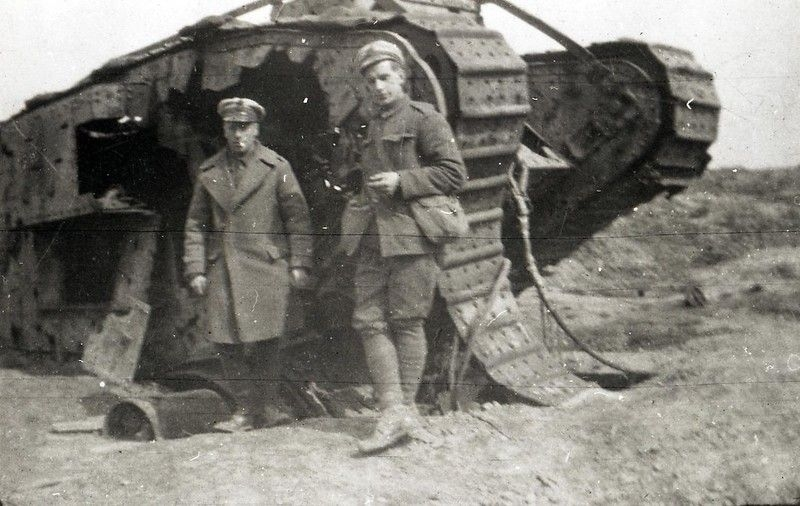
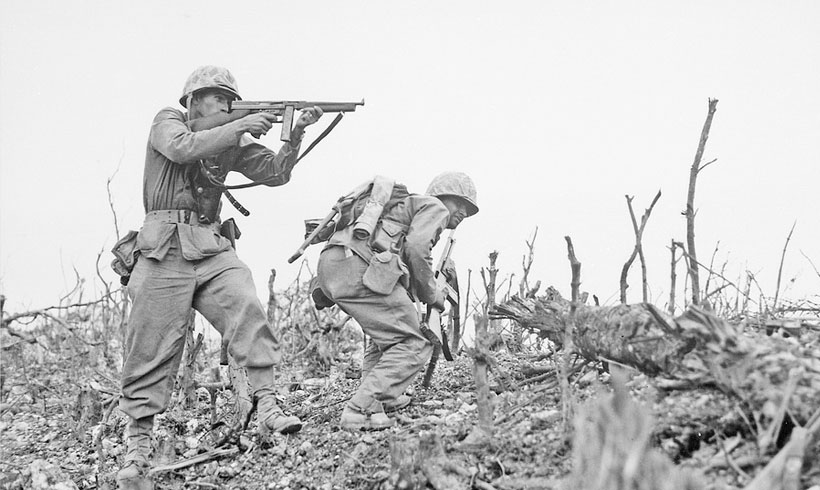

Um fórum dedicado a mostrar um dos períodos mais turbulentos da humanidade

Por conta de questões coloniais, pela primeira vez, toda a Europa se transformou em um barril de pólvora,
que após sua explosão, com o atentado de Saravejo, deu origem à "guerra que acabará com todas as guerras".
Crise econômica, fragmentação da liga das nações, ascensão de novos grupos políticos e o expansionismo
a todo vapor vindo dos países do eixo, fizeram com que as tensões na europa se escalassem à nível global.

Com frentes concentradas na Europa e na Ásia, foi considerada o maior conflito da história da humanidade,
com mais de 60 milhões de mortos no total, e um buraco econômico enorme no pós guerra. Também foi a pior
em questão de brutalidade e crueldade, de ambos os lados.